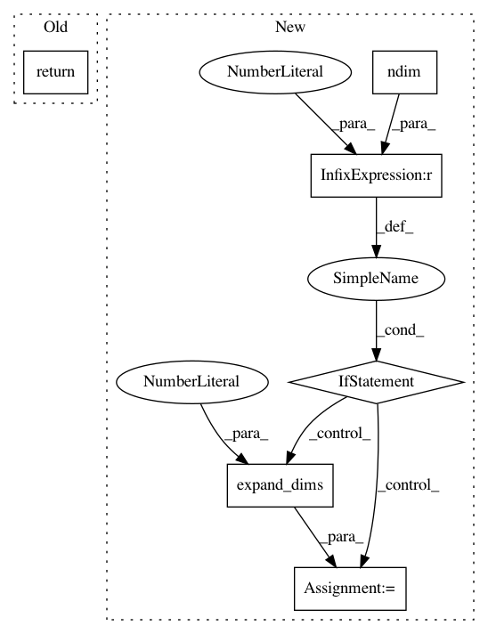

8b3543fca9d811c638bb72d78601c8564f5465fd,keras/backend/tensorflow_backend.py,,batch_dot,#Any#Any#Any#,127
Before Change
else:
adj_x = None
adj_y = None
return tf.batch_matmul(x, y, adj_x=adj_x, adj_y=adj_y)
def transpose(x):
return tf.transpose(x)
After Change
adj_x = None
adj_y = None
out = tf.batch_matmul(x, y, adj_x=adj_x, adj_y=adj_y)
if ndim(out) == 1:
out = expand_dims(out, 1)
return out
def transpose(x):
In pattern: SUPERPATTERN
Frequency: 3
Non-data size: 6
Instances
Project Name: keras-team/keras
Commit Name: 8b3543fca9d811c638bb72d78601c8564f5465fd
Time: 2016-04-03
Author: EderSantana@users.noreply.github.com
File Name: keras/backend/tensorflow_backend.py
Class Name:
Method Name: batch_dot
Project Name: keras-team/keras
Commit Name: 75bef59016a8a230823a04836e1ab6e5bf0079dc
Time: 2016-04-01
Author: francois.chollet@gmail.com
File Name: keras/backend/tensorflow_backend.py
Class Name:
Method Name: dot
Project Name: keras-team/keras
Commit Name: 8b3543fca9d811c638bb72d78601c8564f5465fd
Time: 2016-04-03
Author: EderSantana@users.noreply.github.com
File Name: keras/backend/theano_backend.py
Class Name:
Method Name: batch_dot